Fixture Creator - Macro Configuration
The macros are real jokers. It is possible to access all channels direct with a fixed value. One macro can access multiple channel, each with a unique value. With the show in function it is possible to show the icons next control groups they are related to.
Additionally a formula functionality can be added to each macro and this opens for complexities in the fixture control.
Here some examples that’s only for inspiration.
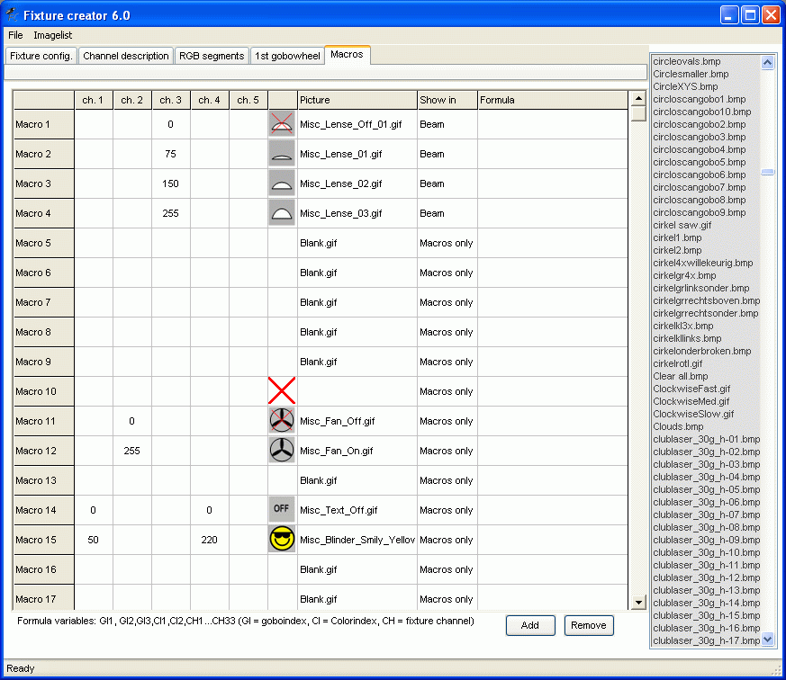
Note the Red X
It indicates that no icon has been attached to macro no. 10
Additional note that it is not a demand to have a value entered in a macro.
Value fields can be empty and they can have an icon named blank.gif just to fillin spaces for organising the icons.
The Macro panel ends like this.
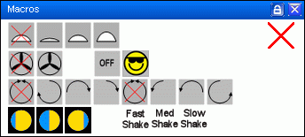
{kind=link}
{kind=link}
Example 1.
A fixture has 3 fixed lenses that can be shifted into the beam so the beam wide can be stepped.
The functionality belongs to beam but beam control only has faders which is not optimal for fixed values.
The 3 lenses are made as macro and shown in the Beam Panel.
See the DMX table above.
For more information on the show-in function see: Fixture Creator - The "Show In" Feature
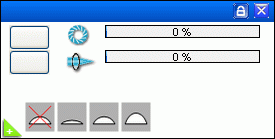
{kind=link}
Example. 2
A fixture, confetti blower has only a fan that can be switched on and off.
This don’t fit into any control panels.
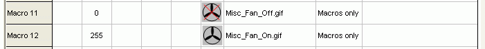
{kind=link}
Example 3
A blinder effect.
Some strobes describe how to create a blinder effect. It is a fixed combination of flash rate and duration. Duration is controlled in one channel and the flash rate in an other.
The macro here sets the value in two channels. (Multiple channel access)
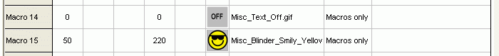
{kind=link}
Example 4
Gobo rotation control.
A fixture have a gobo rotation control channel.
0 – 16 stop, 17 to 127 clockwise rotation with speed from fast to slow.
128 – 144 stop, 145 to 255 counter clockwise rotation from slow to fast.
The default stop value is set to 136.
Placed on the same channel as the rotation fader it can with one click place the fader in a predefined position.
Here the macro is placed on the same channel as an other control.
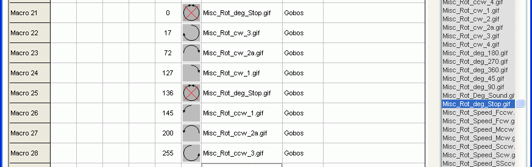
Here the yellow fader is set by pressing one of the rotation icons and still it is possible to tune the direct.
The rotation could have been solve in other ways.
One could be that gobo wheel 2 is used as rotation control and the rotation icon then is inserted as gobos.
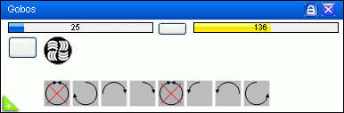
{kind=link}
{kind=link}
Example 5
Formula control
Here a fixture has a color wheel where we want to select a color and then by pressing one of the icons bellow turn the color wheel so two colors is partly shown.
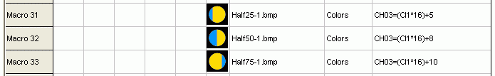
The colors are here placed on the channel 3 with the DMX values.
Color1 = 16, Color2 = 32, Color3 = 48, Color4 = 64 and so on. The distance between the colors is here 16.
To set the color half between Color2 and Color3 the value has to be 40. (24 + 8)
The variable “CI1” is the color wheel1 index. It will have the index value for the last color icon pressed on wheel1.
In this case Color2 is pressed and therefore CI1 = 2
Looking on the formula for macro 32 CH03=(CI1*16)+8
This gives that DMX channel 3 will be set to, (2*16)+8 = 32+8 = 40, when macro 32 is pressed.
Without the formula it has to be made with 4 icons for each color. With 10 colors this gives 40 icons. They will of course set the DMX value direct meaning just one icon to press.
With the formula solution one of the color icons are to be pressed to set the color and then the half icon to move the wheel between the two colors.
The number of icons are only 10 colors and the 3 half color macros. Total of 13.
See more on: Fixture Creator - The "Formula" Feature
{kind=link}
Example 6
Formula control
Here is one control function where a gobo is set and then by using a macro function the shaking is controlled.
The gobo control is placed on gobo wheel2.
The shaking is not controlled on a dedicated channel but the same common gobo channel.
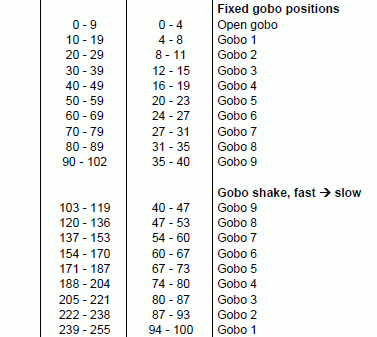
One possibility is to make 3 icon per Gobo where one is slow shake, one med shake and one fast shake.
In total this is 9 gobo set icons and 3 x 9 shake control icons. Total 36 icons.
The complex solution, with formulas makes it possible to only have 3 icons to control shake for all of them.
This gives 9 + 3 = 12 icons.
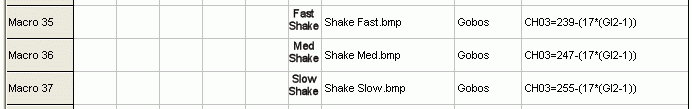
The tricky thing is here to figure out the formula.
GI2 is gobo wheel2 index and this variable have the index value of the last pressed gobo icon.
CH03 is the DMX channel where the shake control are to be placed.
Gobo 1: GI2 = 1, Gobo2: GI2= 2, Gobo3: GI2= 3…… GI2, Gobo9 = 9
The value 17 in the formula bellow is the value distance between the shake gobo control.. 255 – 238 = 17.
CH03=255-(17*(GI2-1))
With Gobo2 and shake slow the values in the formula gives.
255-(17*(2-1)) = 255-(17*1) = 255 – 17 = 238
This is the value that is passed to Channel 3.
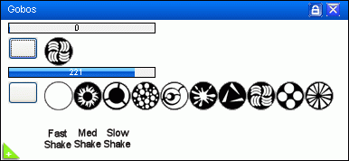
See more on: Fixture Creator - The "Formula" Feature
{kind=link}
{kind=link}
{kind=link}